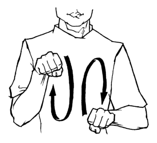
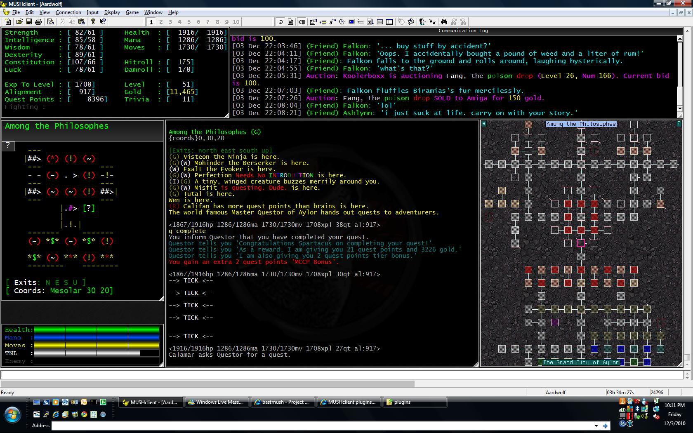
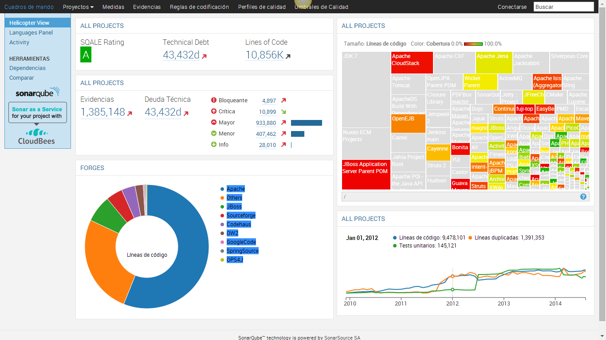

Wilco Fiers
Deque Systems

Many hats
Auto-WCAG Chair
Deque rep in EUs WADEX-group
ACT Taskforce facilitator
Continuous Integration of AX
A developer's story
What to expect
The dev cycle
Software testing
Demo
Axe-core
The dev cycle

What do we use
Editors (IDEs)
Installation tools
Version control
Command line
Build tools
Test tools
The command line (CLI)
No I'm not hacking your WiFi
It's just Windows or OSx
But you type instead of clicking
It's just like those old MUDs

Version Control
Example: GIT
Record keeping
Branching
Branching

Installation tools
Example: NPM
Packaging
Dependencies
Distribution
Build tools
Example: Grunt
Compile CSS or JavaScript
Concatenate and minify files
Test Tools
Command line tools
Browser tools
Continuous Integration
Jenkins
Travis CI
SonarQube

About testing
The old school way
Like my grandma used to do
Time consuming
Costly
Dedicated test teams
Automated testing
All the cool kids do it
Very fast, runs in minutes
Written by developers
Your test stack
50% Unit testing
25% Integration testing
15% Functional testing
10% Manual testing
AX tangent
50% Accessibility test tools
25% Custom AX tests
15% QA testing
10% Expert testing
Joke #1
What's the favorite tool of vikings and lumberjacks?

Automated testing
unit test
Test individual bits of code
// Test the addNumbers function
it('should adds 3 numbers together', () => {
let result = addNumbers(1, 2, 3);
expect(result).toBe(6);
});
Integration test
Test how components work together:
// Message an iframe
it('receives messages send from an iframe', () => {
receiveMessage((msg) =>
expect(msg).toBe('foo'));
$('#iframe').contextWindow
.sendMessage('foo');
});
Functional Testing
Test high level functionality
// Test we get back the right page
it('returns the homepage from /home', () => {
browser.url('http://localhost/home');
expect(browser.getTitle())
.toContain('Homepage');
});
Axe testing
it('passes axe rules', (done) => {
let elm = React.createElement(MyComponent)
let reactNode = mountToDoc(elm)
axe.run(reactNode.getDOMNode(), result => {
assert.lengthOf(result.violations, 0)
done()
})
})
Axe-core
Key features of axe
Open Source
Runs on the DOM
Understands your CSS
Axe Manifesto
Automated accessibility testing must
Have zero false positives
Be lightweight and fast
Work in all modern browsers
Be tested automatically itself
Versatility of the axe
Plugins for browsers
Embedded in your HTML code
In many test runners
Task Runner
Axe integrates with many test runners
Jasmine
Mocha
Phantomjs
QUnit
Selenium
Task Runner
JUnit (Java)
WebdriverJS
Grunt
Cucumber
... and I'll stop there
Joke #2
Knock knock.
Demo
A day in the life or me.
Let's do some coding!
Recap
Programming isn't magic
AX testing is the same as other types of testing
ARIA makes automated tests easier
Automated Test Tools help